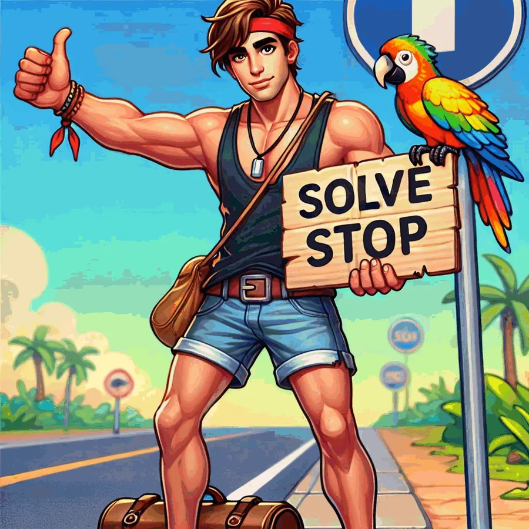
My game concept
Solve Stop
A hitchhiker travels across very different regions. To move on, he solves puzzles that build the tools and vehicles he needs for the next route. Rubis, a cheerful parrot, guides him and the player.
The twist: matched items do not disappear. They upgrade. Screws become gears, gears become motors, motors become vehicles. The upgraded item appears in the cell you tapped, so where you tap matters.
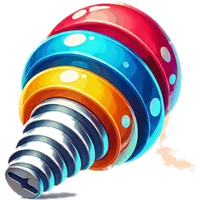
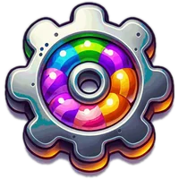
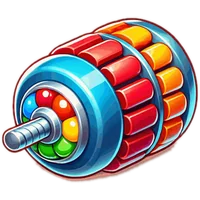
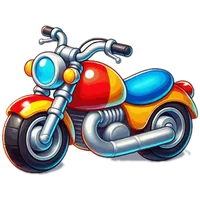
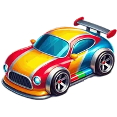
ToolsVehicles. Each one can travel further than the last, so a route's goal is a set of vehicles.
Playable prototype
Try the mechanic
Tap a group of three or more identical items. The upgrade lands where you tapped. Cleared cells refill in place instead of falling from above, exactly as in the design document.
| 3–4 | 1 upgraded item |
|---|---|
| 5 | 1 upgraded item + Propeller |
| 6–7 | 2 upgraded items + Propeller |
| 8 | 2 upgraded items + 2 Propellers |
| 9–11 | Double-tier upgrade + Bomb |
| 12+ | Double-tier upgrade + Fireworks |
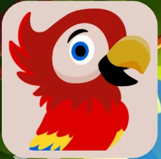
Route 1. Build me a motorcycle!
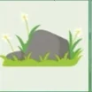
Pathway routes 1–15
Grids grow from 3×3 to 6×6. Stone pieces appear during play, not only at the start. Gift boxes buy a backpack, hat, sneakers and sunglasses.
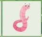
Ice World routes 16–30
Ice blocks crack in three stages. Rubis now asks for worms, a secondary goal that ties the story to the board.
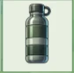
Sahara routes 31–50
Items buried in sand, water bottles to collect, and a final stretch where a sandstorm swaps the move limit for a timer.
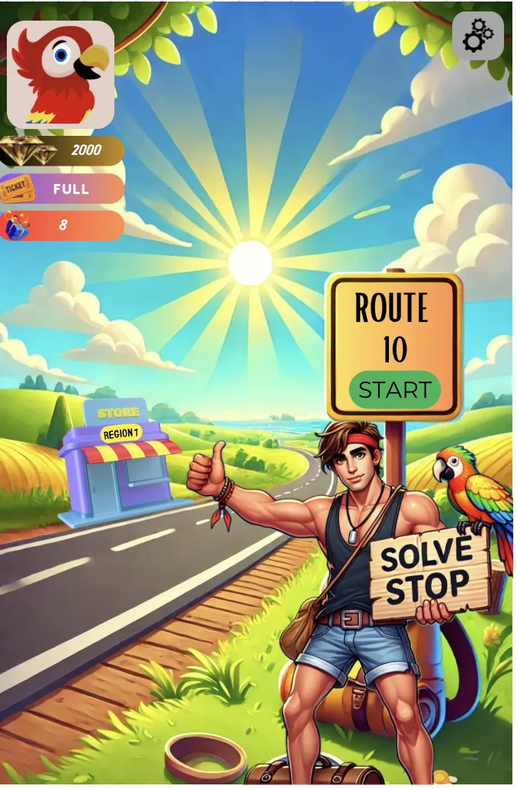
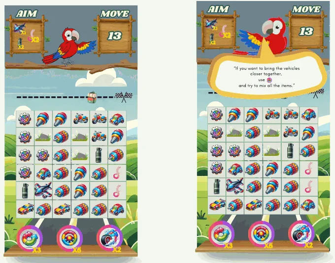